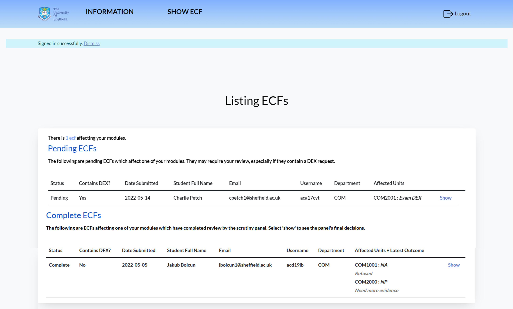
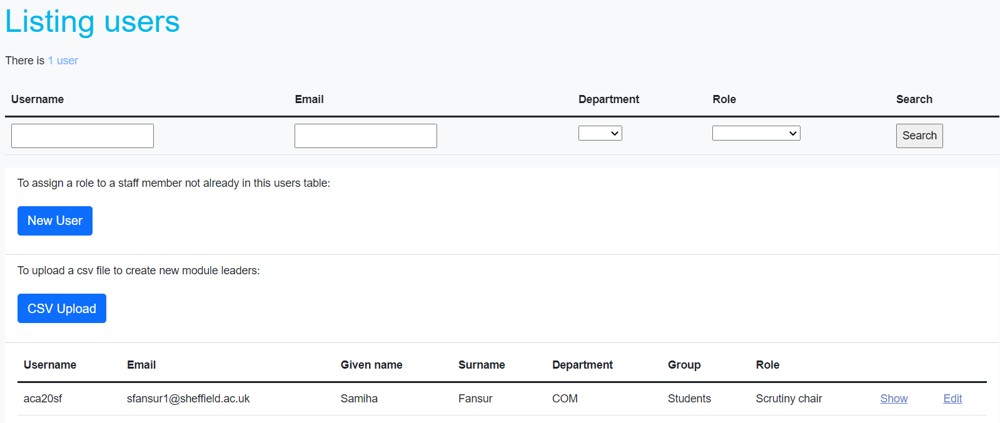
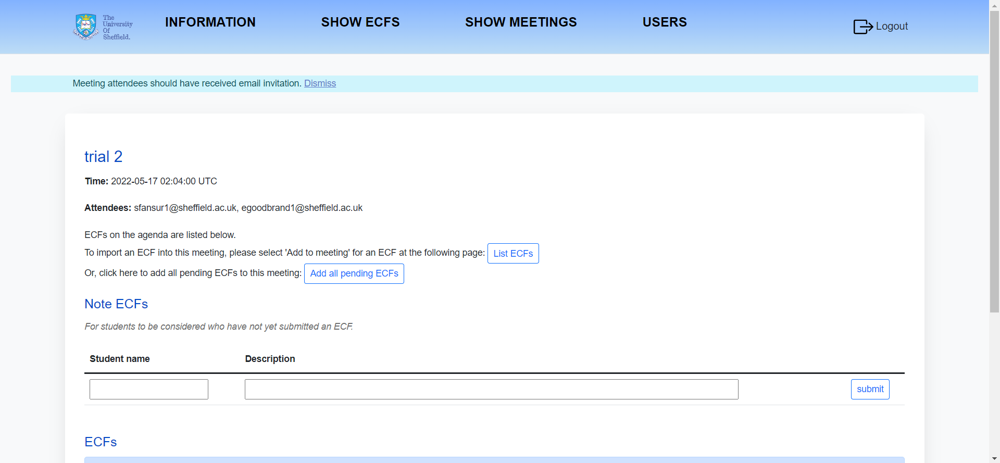
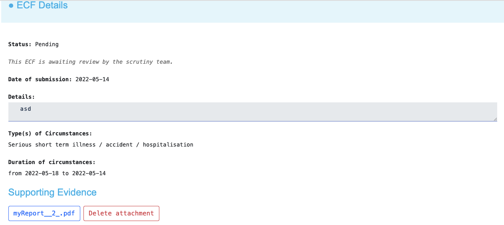
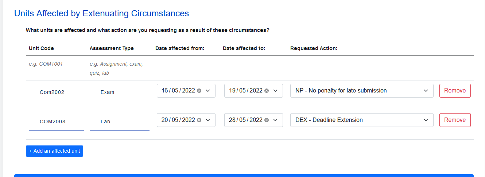
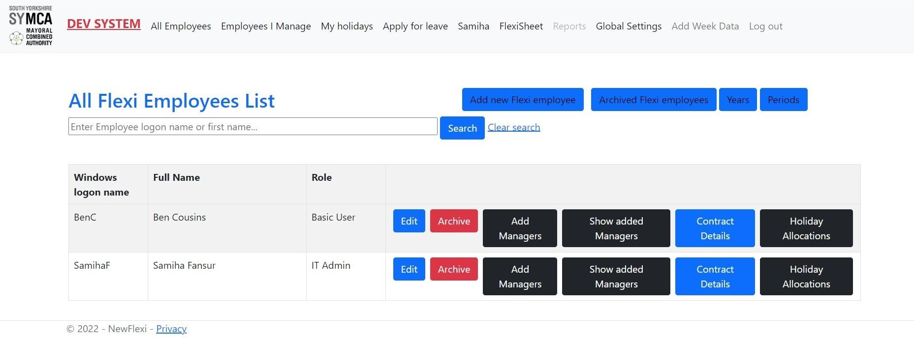
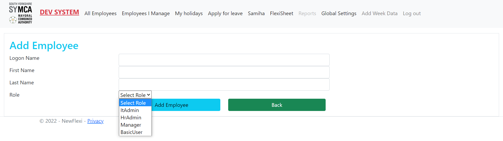
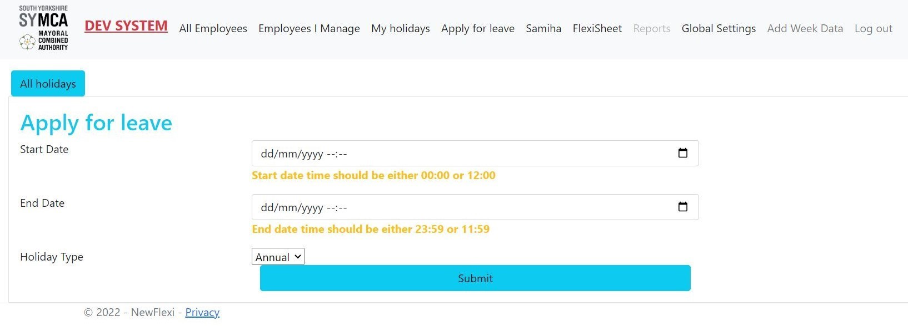

I'm Samiha Fansur, a Computer Science enthusiast from the University of Sheffield, on track to achieve First Class Honours. During my placement year at SYMCA, I played a pivotal role in major IT initiatives, particularly the redevelopment of the Flexi timesheet system. I'm skilled in various programming languages and am passionate about driving projects towards modernization.
When I'm not coding, I'm on the tennis court, channeling my strategic mindset into every game.
Recognized with the Software Hut Prize and Best Communicated Solution Award, I blend technical prowess with a passion for real-world solutions. I am constantly pursuing new technologies and would love to connect with like-minded people. Feel free to connect through my socials below!
An online-system developed for The University of Sheffield to make the process of creating, storing and dealing with ECFs easier and more streamlined for both the students and staff.
GitHub Link |
Ruby on Rails
HTML
Bootstrap
Postgresql
Capybara
Agile Development
A website developed with Bootstrap and Ruby on Rails, incorporating a Postgresql database, facilitates the safe sharing of confidential data between students and The University of Sheffield. The initiative prioritizes data security, granting access only to credentialed individuals for particular data. Employed Bootstrap for its streamlined and user-friendly design, Postgresql for database and data handling, and Capybara to ensure rigorous software testing through both Unit and User-Acceptance/End-to-End Testing.
Here are a few snippets of the system:
Module Leader View

ECF notesAdding Users to the system

Meeting Agenda

ECF details snippet showing attachment

Affected Units snippet

The University Mentorship Application is a web tool developed to bridge the gap between students and their potential guides in academic environments. Utilizing tech stacks including Ruby, Sinatra, and SQLite 3, this platform provides a trusted space for learners to seek out mentors specialized in their fields. Its user-friendly design and smart pairing logic make mentor-seeking straightforward, helping students effectively locate suitable academic advisors.
Check out the GitHub repository for more details and code samples.
*All login details are encrypted and kept in a secure SQL database along with other sensitive data.
The software monitors hosts, guests, houses, rooms, utilities, and their respective types. It computes expenses based on the duration of stay and includes cleaning and maintenance fees. It also allows guests to leave reviews and rate their experience for the properties they rented.
*All login details are encrypted and kept in a secure MySQL database along with other sensitive data.
Timesheet system developed by me during my placement year at SYMCA for internal employees to clock in and clock out by leading a team of developers. I modernized SYMCA's Flexi-timesheet system, introducing efficiency, current technologies, and several new features, all while ensuring code maintainability and an appealing user interface.
C#
.NET 6.0
Bootstrap
SQL
HTML
JavaScript/React/jQuery
Database Management
As the project lead, my role encompassed requirements gathering, planning, and execution. This journey saw me collaborating with different departments, designing optimal database diagrams, and ensuring smooth task distribution. Developed primarily using .NET 6.0, the project's backbone was constructed with considerations for the organization’s Cyber essentials policy.
Challenges such as language selection and changing stakeholder requirements emerged during the process. Tactical decisions, leadership, conflict resolution, and effective project management ensured we adhered to our timeline and delivered a product meeting our standards.
*System was secure as it used Microsoft Active Directory to allow users to access the system. And role assignment restricted user access.
Please also note that the screenshots below have been modified to ensure they are public-friendly. All sensitive and private data pertaining to the company/employees has been removed or redacted.
Here are a few snippets of the system:
List of all employees in the system

Add Employee

Applying for leave

Employees Managed by a user view
Contact me
+44 7721951137 |
samiha.fansur.2002@gmail.com |
Sheffield/Lincoln, UK